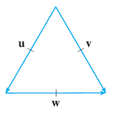

If u is a unit vector, find \(\mathbf{u} \cdot \mathbf{v}\) and \(\mathbf{u} \cdot \mathbf{w}\). (A diagram with an equilateral triangle with side length 1 is shown, with vectors u, v, w forming the sides).
